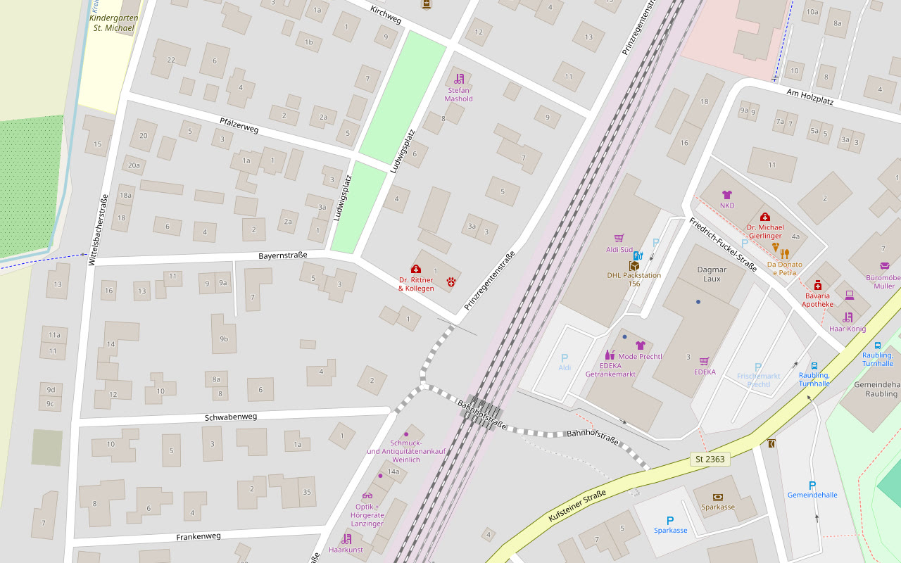

Tierarztpraxis in Raubling
Kleintierpraxis Dr. Tiefenthaler
Für Hund, Katze, Kaninchen und Nager. Bitte vereinbaren Sie vorab telefonisch einen Termin.
Sprechstunde Montag bis Freitag
Sprechzeiten
Herzlich willkommen.
- Montag8–11 Uhr15–18 Uhr
- Dienstag8–11 Uhr15–17 Uhr
- Mittwoch9–13 Uhr
- Donnerstag9–13 Uhr17–19 Uhr
- Freitag9–13 Uhr
Bitte rufen Sie immer vorher an: für Termine, für Beratungen und kurz bevor Sie Futter oder Medikamente abholen.
Wir nehmen neue Patienten auf. Bringen Sie zum ersten Termin den Impfpass und vorhandene Befunde mit. Katzen bitte im Korb, Hunde an der Leine.
Leistungen
Vorsorge und Behandlung
- Impfungen
- Parasitenbehandlung
- Kennzeichnung (Mikrochip, Tätowierung)
- Heimtierausweis
- Fütterungsberatung
- Infektionskrankheiten
- Krankheiten des Ohres
- Krankheiten des Auges
- innere Krankheiten
- Krankheiten der Harnorgane
Diagnostik
Röntgen, Ultraschall, Homöopathie
- Röntgen
- Ultraschall
- Zahnröntgen
- Homöopathie, auf Wunsch ergänzend
Futter führen wir von Royal Canin und Hill's. Rufen Sie kurz vorher an, ob es auf Lager ist. Wir bestellen es auch gern für Sie.
Operationen
Operationen und Zähne
Weichteilchirurgie
- Kastration/Sterilisation (Hund, Katze, Kaninchen)
- Wundversorgung/Wundnaht
- Tumorentfernung
- Amputation
- Bulbusextirpation
Zahnbehandlungen
- Zahnsteinentfernung mit Ultraschall
- Zahnextraktion
- Zahnbehandlung Nager
Vor und nach der Operation
- Hund und Katze, vorher: zwölf Stunden kein Futter, die letzten zwei Stunden auch nichts trinken.
- Hund und Katze, danach: acht Stunden nicht füttern.
- Kaninchen und Meerschweinchen: nicht nüchtern lassen. Sie fressen vorher ganz normal und danach, sobald sie wollen. Bitte gut warm halten.
Die Praxis
Ihre Hausärztin fürs Tier
Dr. Irmgard TiefenthalerTierärztin
Die Praxis gibt es seit 2015, studiert habe ich in München. Ich sehe mich als Hausärztin für Ihr Tier: Ich berate Sie und bin Ihre Ansprechpartnerin, wenn es ein Problem gibt. Der Besuch soll für Sie und Ihr Tier so stressfrei wie möglich sein.
Ich mache so viel wie möglich selbst. Für weitergehende Untersuchungen, zum Beispiel in der Orthopädie, überweise ich an Fachpraxen und Kliniken.
Fotos vom Team folgen. Wenn ein Tier eingeschläfert werden muss, komme ich dafür auch zu Ihnen nach Hause.
Notfall
Außerhalb der Sprechzeiten
Bitte wenden Sie sich im Notfall an eine dieser Kliniken.
- Tierklinik Dr. ButenandtNotdienst 8 bis 24 Uhr08031 68027
- Vet-Zentrum RosenheimMontag bis Freitag 8 bis 22 Uhr, am Wochenende 9 bis 12 und 17 bis 18 UhrNotdienst 0172 8305589Praxis 08036 3033473
- Tierklinik OberhachingNotdienst rund um die Uhr089 63893020
Anfahrt
Bis bald.
83064 Raubling
Die Zufahrt ist zurzeit nur über die Bayernstraße möglich. Parkplätze sind hinter dem Haus.
Bezahlen können Sie bar oder mit Karte.

Kleintierpraxis Dr. Tiefenthaler © OpenStreetMap-MitwirkendeRoute in Google MapsApple Karten08035 8739188
Fax 08035 8739189tierarztpraxis-tiefenthaler@gmx.deImpressumDatenschutz